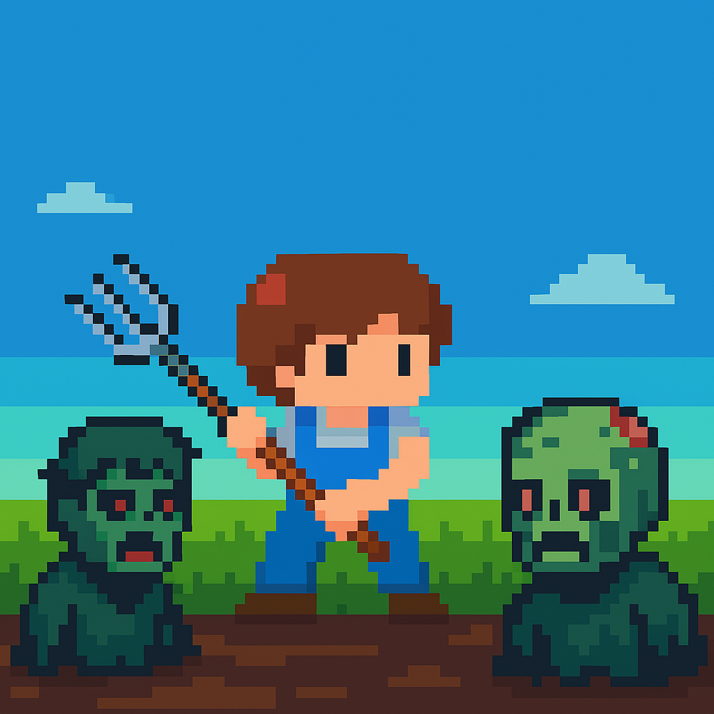
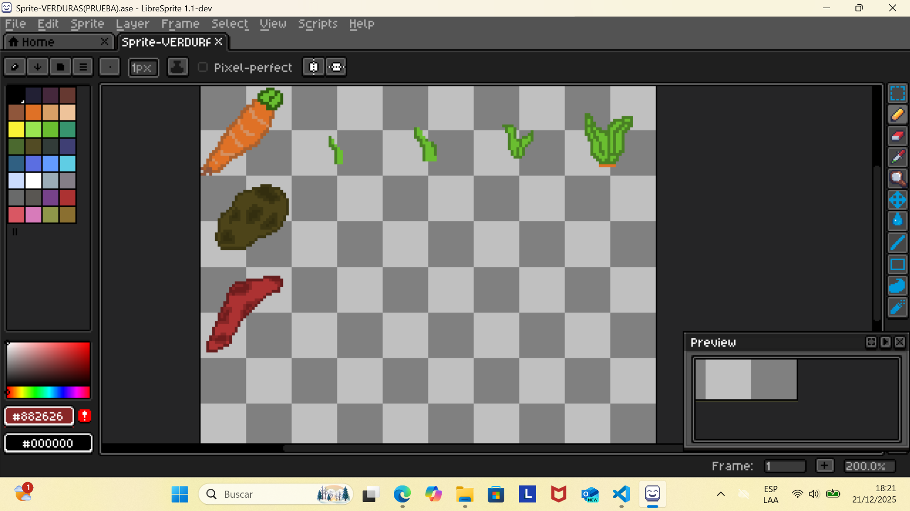

Programando mecánicas base y sistemas.
Sembrar tiene consecuencias

¿Qué es Sow & Suffer?
Sow & Suffer es un juego en desarrollo que explora la relación entre crecimiento, decadencia y decisiones irreversibles.
Proceso de desarrollo

Diseño visual y pruebas de estilo.
Estado del proyecto
Actualmente en pausa. Varias ideas y sistemas ya están en prototipo.